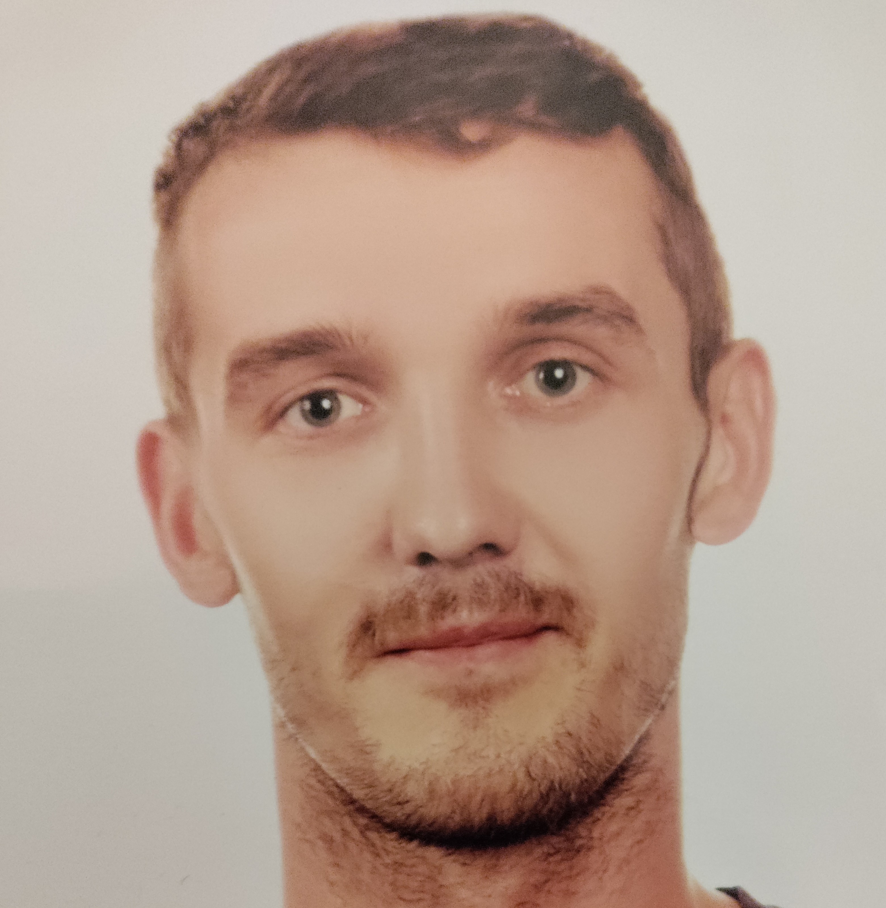
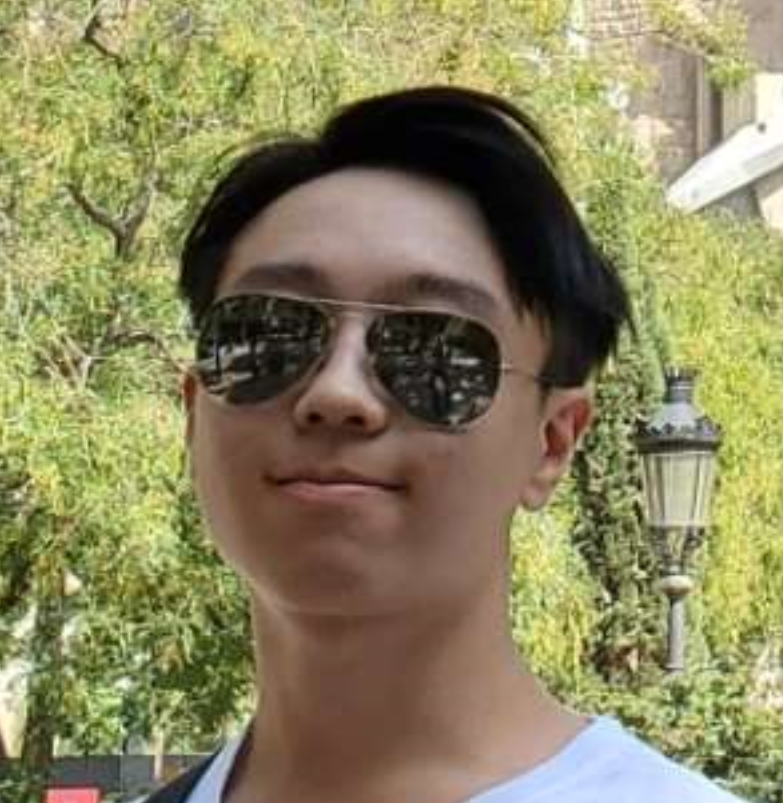
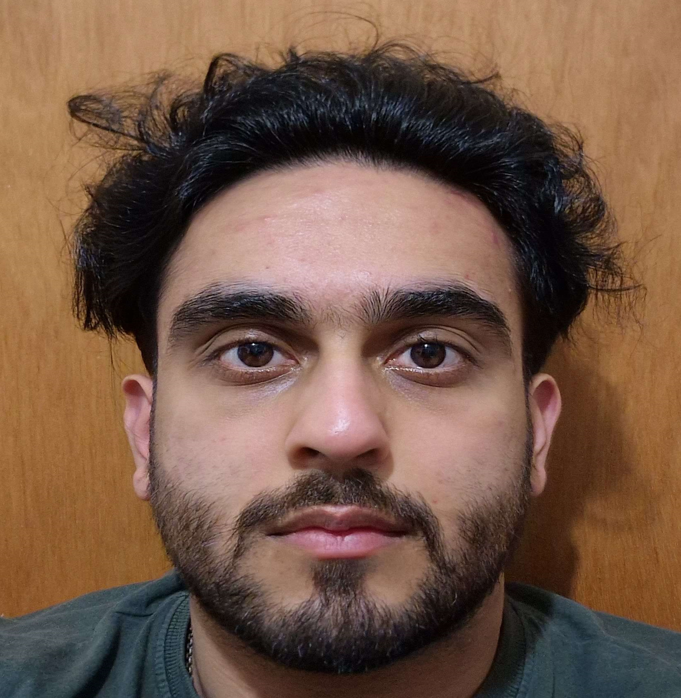

About Us
We are a company that focuses on user interaction. We make sure that our products are functional and well-secured.
But the most important goal is to satisfy our customers and make sure the users are happy.

Slwomir Kolodziejczyk
Frontend Developer
Leadership is what inspires a team and allows for better communication.
I am involved in improving functionality and user satisfaction.
Multitasking, critical thinking and a problem-solving attitude allow
me to do these tasks so well while being well-organised and able to plan.
Robert Coutts
Frontend / Backend Developer
Highly skilled programmer in case of backend and frontend.
Outstanding knowledge about Object-Oriented Programming.
Well known and understand of programming good habits.
High performing teamplayer fixing bugs and refactoring code.

Chris Chan
Backend Developer
I am mainly in charge of handling the API side of things.
Responsible for creating and managing the map and anything related
to the Google API and making sure it connects to the website.
I am always willing to learn and motivated to improve in programming.

Hasan Mohammad
Frontend / Backend Developer
I am mainly in charge of how the application looks.
Creating new designs comes with patience and strong team support.
Responsible for making sure the platform responds as intended for the
users and that everything is easy to use and understand.
A personal enjoyment of mine is when you make something that looks professional and neat!
Lachlan McIntyre
Backend Developer
Fokusing on backend mostly on connection host-server.
Testing sql and serching query.
Unstopable, not afride to be strait and honest what he think.
Great knowledge about programmin standards and programmin tools.
The same time promotes an active lifestyle ;D
Aryan Orpe
Reporter
Reporter and team supporter. Goes beyond his limits to
be the best in the team. Multitacking and problem solving attitute.
Big fun of netfix and popcorn.